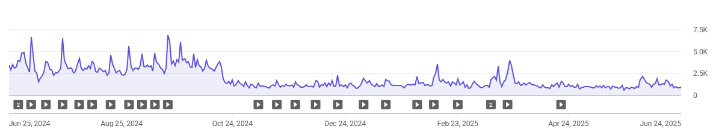

In this post, I’ll share my YouTube journey, the thoughts behind it, and what lies ahead.

Introduction
Two years ago, I hit “Upload” on my very first YouTube video. I had no fancy production setup (I still don’t, lol), no audience, and no clear idea where things would lead, just a passion for computational science, and a desire to share what I was learning about Python, Julia, and more recently, Mojo.
Fast-forward to today: I’ve uploaded dozens of videos, spent hundreds of hours scripting, recording, editing, and I’m still not monetized.
The Vision: Tech Content for the Curious
My goal was simple: to build a small corner of the internet where curious minds could explore computational science and programming in depth. I didn’t want to chase trends, I wanted to create content that taught, that explained, that experimented.
Python tutorials. Julia benchmarks. Mojo’s wild potential. My channel became a personal lab, and an open notebook.
I’ve always been my own toughest critic, so I don’t think I’ve ever published a video that fully meets the standards I imagine. Still, I knew I had to keep creating to improve. There are plenty of topics I haven’t covered yet, even though they’ve been on my mind for a long time. Maybe it’s because I’m either too lazy or too much of a perfectionist when it comes to really good ideas and topics.
When Smart Audiences Make Content Harder
Some of my early videos on the Julia programming language went viral on YouTube, which brought in a lot of subscribers interested in similar content. But here’s the thing about people who follow scientific programming, they’re incredibly smart. We’re talking about PhD students, university professors, or seasoned professionals in the tech industry. These aren’t casual viewers you can retain just by posting regularly. Their expectations are high, and they already know a lot, so it takes real depth and value to keep them engaged.
Why Getting Monetized is Important
Earning money allows you to keep doing what you love, creating content around scientific programming. But if it doesn’t generate enough income, reality kicks in, and you’re forced to shift your time toward something more financially sustainable. In a niche with a small, highly intelligent audience, you often have to invest significantly more time and effort into producing complex content, only to earn far less than creators in broader, more popular niches on YouTube.
The Growth: A Slow, Steady Climb
I won’t lie, starting a YouTube channel is a slow grind, especially in a niche like computational science. I celebrated my first 100 subscribers like I’d won a Nobel Prize. I saw some growth from tutorials and coding deep dives, and even got great comments from viewers who found the content genuinely helpful.
But while subscriber numbers were growing slowly, watch hours became the bottleneck. After two years, I’m still stuck at around 3,000 watch hours, well below the 4,000 required for monetization.
The Algorithm Shift: When Shorts Got Loud
Then came the YouTube Shorts update, and things took a strange turn.

Overnight, my daily impressions were cut in half. The momentum I had built up through long-form educational content hit a wall. YouTube’s focus had clearly shifted: Shorts were getting the spotlight, and deep-dive videos like mine were left behind in the algorithmic shadow.
I put out a few more videos, but even my top-performing ones weren’t getting any views anymore! The engagement wasn’t the same. My audience came for depth, not speed. And it turns out, that’s a tough sell in a platform now optimized for swipeable soundbites.
Reaching More Viewers
I’ll be honest with you, I’m fully capable of creating videos on complex topics in programming and mathematics. But there’s a real issue. YouTube’s algorithm just doesn’t seem to favor content even remotely close to my niche, and I honestly don’t know why. So after spending hours crafting detailed scripts, designing slides, and doing heavy editing, the final video ends up with barely 200 views. It’s disheartening, to say the least.
I know it might sound like I’m fixated on view counts, but let’s be honest, everyone wants their videos to be seen by more people, and I’m no exception. I’m fully aware that the videos I’ve made aren’t necessarily groundbreaking or impossible for others to create. Still, each one takes a lot of time and energy to produce, and that effort makes it tough when they go mostly unnoticed.
Lessons They Don’t Tell You
Ironically, the videos that go viral1 on your channel can end up hurting it in the long run. Why? Because the more views a video gets, the more subscribers you gain, but there’s a catch. Most of those new subscribers came for that one specific topic. So when you publish your next video, chances are they’re not interested. They don’t watch, like, or engage with it, and that lack of interaction signals to the algorithm that your content isn’t worth pushing, effectively killing the video right out of the gate. This experience has been humbling, but also deeply educational. Here’s what I’ve learned:
- You can grow a channel fairly easily within a niche. But if the audience size is small, there’s a good chance you’ll never get monetized or earn a sustainable income from it.
- YouTube rewards quantity, not necessarily quality. A 20-minute, carefully crafted tutorial might get outranked by a 15-second meme.
- Discoverability in niche topics is hard. Even good content needs luck or algorithmic blessings (Whatever that means!) to surface.
- The grind is real. Scriptwriting, editing, thumbnails, SEO, comments, it’s a full-time job without the pay (yet).
- But consistency builds skill. I’m a better communicator, editor, and teacher now than I was two years ago.
So What’s Next?
Am I giving up? Absolutely not.
I’m still fascinated by Mojo, still exploring Julia’s quirks, and still committed to demystifying complex topics. But I’m also being more strategic:
- Experimenting with hybrid content, video topics that lead into long-form deep dives.
- Increasing upload frequency, that’s easier said than done. It is hard to increase upload frequency and publish quality content at the same time.
- Posting across platforms to diversify reach (This one is hard, I don’t have followers on other platforms!).
- Engaging more directly with my community through comments, polls, and behind-the-scenes updates (I should work on this one).
Redefining Success
Sure, I haven’t been monetized, yet. But here’s the thing: I’ve received messages from students who used my tutorials to pass their exams. From developers who got curious about Julia or Mojo because of my videos. That means something.
In a world chasing views and virality, creating value is its own kind of success.
To other niche tech creators out there: if you’re feeling invisible, know you’re not alone. Keep going. Keep learning. Keep sharing.
If this post resonates with you, or if you’ve gone through a similar journey, I’d love to hear your story, or better yet, let’s collaborate on something meaningful.
Footnotes
For instance, What is Differentiable Programming and The Best Package to Plot in Julia↩︎